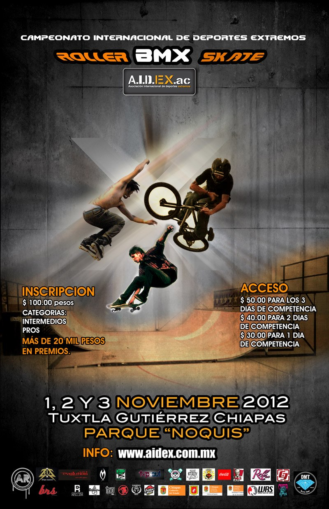

¡Amonos pal Sur! Tuxtla Gutiérrez ahí te van las Cruz.e
03 febrero, 2014 Gracias a nuestros brothers de Evolution Xtream Shop que confiaron en la marca. Ya llegamos hasta las hermosas tierras del sur. Ya podemos decir que Cruz.e está de Norte a Sur y de Este a Oeste con prescencia desde Ensenada hasta Chiapas, desde San Pancho Nayarit hasta el D.F y Querétaro. Han sido meses de trabajo duro de todo el equipo: Glory, Fabi , Rober, Jero, Yoshi y con las súper colaboraciones de Berni, Pina y Rups desde los inicios. Aparte no podemos dejar de mencionar el excelente trabajo de todo el equipo creativo de Encinta y Platypus design. Y finalmente agradecer la incorporación de nuestro brother Abel Irremediable Salazar el skater de la marca y a su súper border el excelente skater también de mini cruisers Eduardo Wolf ! Estos dos "broders" se han rifado con su apoyo a la marca.. No resta más que segir agradeciendo a todos y cada uno de los distribuidores por su gran gran apoyo..
Ja ja ja , este blog se trataba de hablar de una sola marca y distribuidor en Tuxtla los "broder de Evolution Xtrm Shop" y terminamos agradeciendo a todo mundo.. pero bueno eso pasa cuando uno deja la mente divagar.. eso si de corazón todo se escribe y las vibras van para todos.
Un abrazo a la banda de Chiapas.
Esperamos muchas fotos de banda dandole a sus Cruz.e por allá muy pronto !
Listos pal Cruz.e Chiapas. !